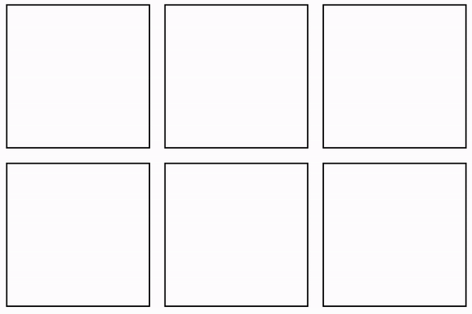
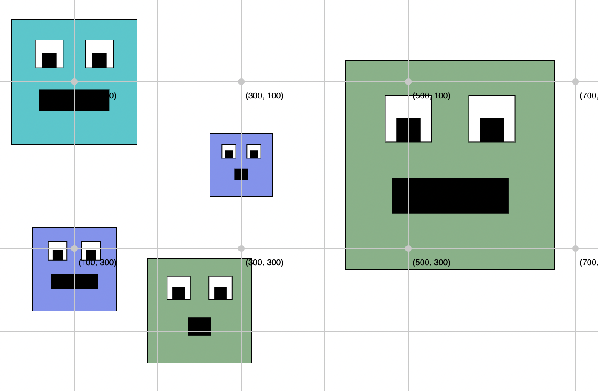
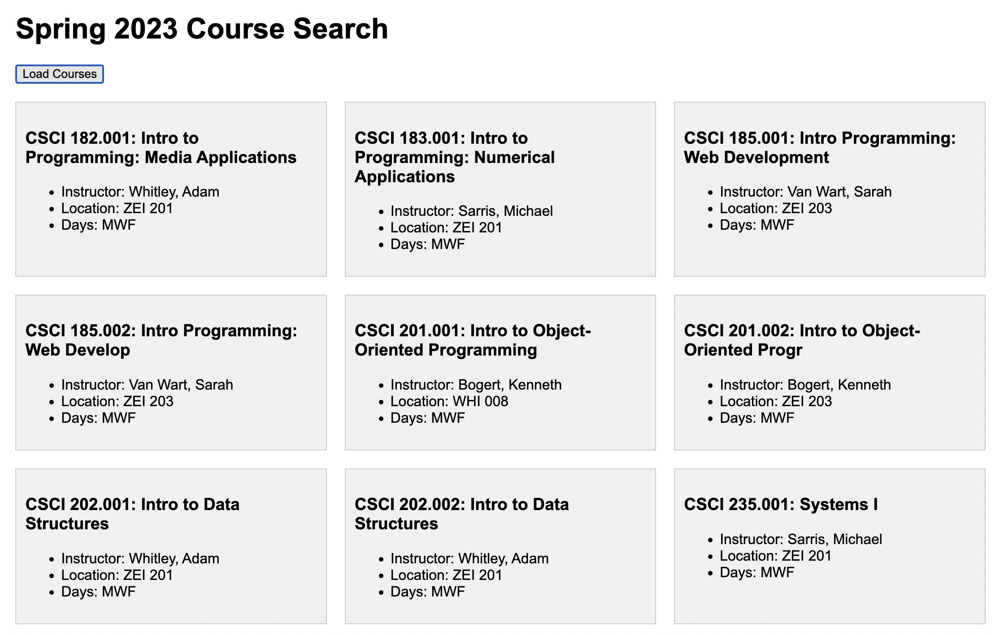

Final Exam: Section 1 (8AM-10:30AM)
1. Ground Rules (Please Read Carefully)
Quiz 3 is a mixture of in-class and take-home activities. If you are already satified with your quiz score, you do not need to take Quiz 3.
In-Class Exercises
The first part of the quiz will be completed during your regularly scheduled final exam window.
- Section 1 (MWF 12:30-2PM): Monday, 12/5 from 11:30AM-2PM
- Section 2 (MWF 3:30-4:45 PM): Friday, 12/2 from 3:00PM-5:30PM
You may use your notes, pen and paper, and any “cheat sheats” that you want to make. You may not use a computer.
Take Home Exercises
For the take-home portion of the quiz, you may begin working on it as soon as it is posted (Friday, 12/02 at 8AM). It is due on Monday (12/5) at 11:59PM. No quizzes will be accepted after this time. For the take home portion of the quiz:
- You MAY use the course website, as well as any notes, lecture files, or internet reference materials to complete the quiz.
- You MAY NOT discuss the quiz with anyone or collaborate in any way with anyone. This is an individual assessment.
2. Study Resources
To study for the quiz, please review the following:
- Course slides, videos, readings, and sample code.
- Study Guide
- Sample Problems (for the in-class, written portion of the quiz).
- Quiz 2
Please also become very comfortable with the exercises from Tutorial 12 (for the take-home portion of the quiz).
3. Actual Quiz
A. [40pts] Written Portion (In Class)
To be administered during your regularly scheduled class time. Open notes, closed computer.
B. [60pts] Computer-Based Portion (Take Home)
Please download the starter files (below) and complete the 3 sets of tasks described below. Read the instructions that are outlined under each task very carefully. You must complete each exercise exactly as the instructions indicate to receive full credit. Otherwise, you will receive partial credit for the parts you correctly completed.
1. [20pts] DOM Manipulation
Open the exercise01 folder and add click event handlers to all of the div tags. When a div element is clicked, its background should change color (pick any color you like). When you’re done, your page should look like the demo shown below:

2. [20pts] Functions
Open the exercise02 folder and create a function called drawMonster that draws a picture of a monster as pictured below. The function should have the following parameters defined (in order):
x(number) – the x-coordinate of the center of the square(s).y(number) – the y-coordinate of the center of the square(s).size(number) – the width of the larger square.color(number) – the color of the monster’s face.isSurprised(boolean) – whether or not the monster should look surprised
If the argument for isSurprised is set to true, a “surprised mouth” should be drawn (smaller). Otherwise, a “regular mouth” should be drawn. When I invoke your function as follows (within the setup() function)…
drawMonster(100, 100, 150, '#0bc9cd', false);
drawMonster(300, 200, 75, '#8093f1', true);
drawMonster(100, 325, 100, '#8093f1', false);
drawMonster(250, 375, 125, '#7fb285', true);
drawMonster(550, 200, 250, '#7fb285', false);
…the image pictured below should be drawn to the screen:

Implementation suggestions (optional):
- Use p5.js’s built-in rect function.
- If you include this statement,
rectMode(CENTER);therect()function will treat the x- and y-coordinates as the center of the rectangle (instead of as the top left-hand corner). You can read more about rectMode here.
3. [20pts] Loops + Conditionals
Open the exercise03 folder and examine all of the files. Inside of main.js, there is a fetchCourses function (already built for you) that fetches all of the UNCA course offerings for Spring, 2023: (here). Note that by modifying the year or term in the URL string, you can also view course offerings from previous semesters.
Your job
- Modify the function body of the
displayResults(courses)function so that it outputs to the#resultselement only courses that offered within the CSCI department. You may use any kind of loop that you like. - Ensure that your HTML snippet displays the following information for each course (using a template literal like we did in
HW5):- Title
- Instructor
- Location
- Days (i.e., which days does the course meet?)
- Location and Days may be
null. That’s OK for this exercise (though in real life, you’d probably want to output a friendlier message).

Hints
- Loop through the
coursesarray. - If the current course’s
Departmentproperty is “CSCI”, then insert an HTML representation of the course into the<div class="results"></div>container. - Partial credit will be given.
- We went over this in Lectures 19-20.
- A sample of the HTML representation of a course is shown below, and also in
exercise03/template.html:
<section class="course">
<h3>NM 101.001: Digital Design Principles</h3>
<ul>
<li>Instructor: Cosette, Ashe</li>
<li>Location: OWE 305</li>
<li>Days: MW</li>
</ul>
</section>
What to Submit
Please doublecheck to make sure you’ve completed the 3 tasks described above. When you’re done:
- Zip your entire
quiz03folder that contains a COMPLETED version of the tasks.- DO NOT accidentally submit the starter files or you will not receive any credit for the quiz.
- Upload the
quiz03.zipyou just made to the course Moodle under Quiz 3.